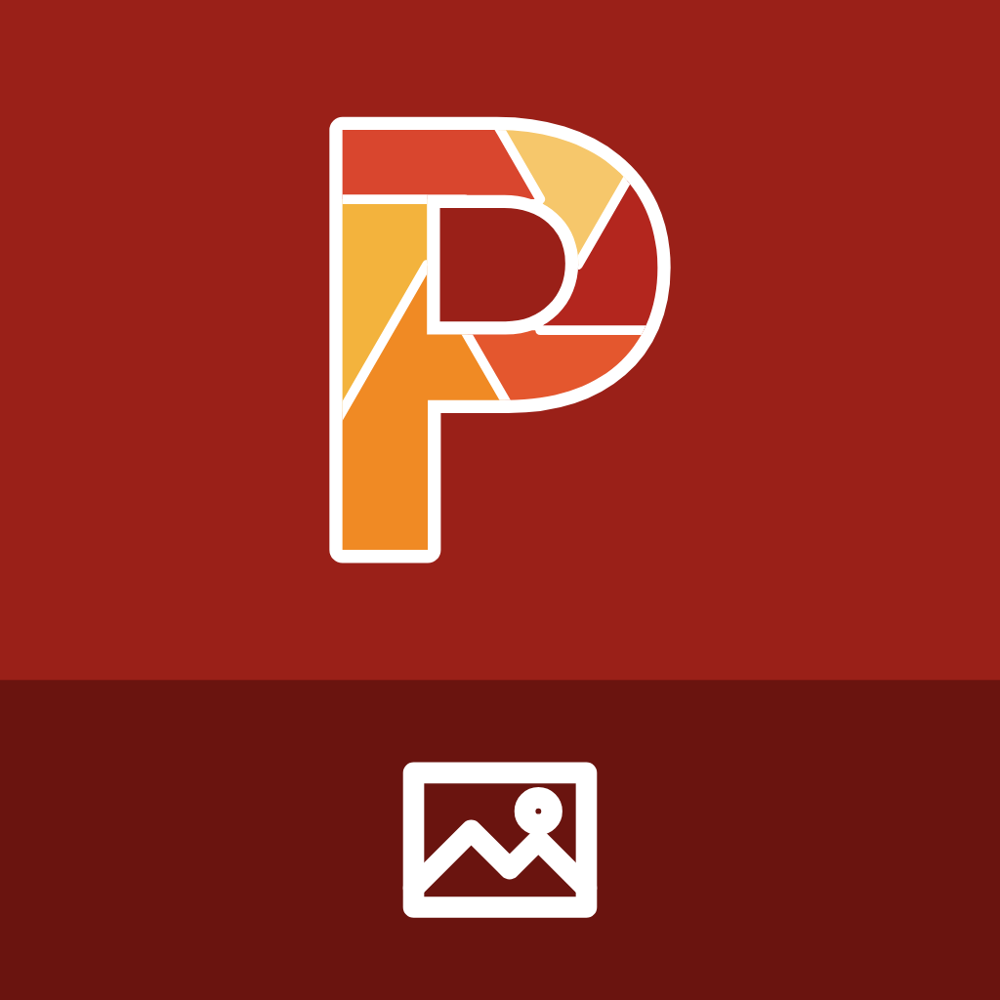

Politique de confidentialité
En vigueur le 22 novembre 2026.
En bref.
- Les applications de Kwak Software fonctionnent sur votre ordinateur. Elles ne recueillent aucune donnée d'analyse, n'affichent pas de publicité et ne demandent pas de compte.
- Vos photos, documents, enregistrements et autres fichiers restent sur votre ordinateur. La plupart de nos applications ne se connectent jamais à Internet; PhonoOut va en ligne seulement lorsque vous cherchez un disque.
- Nous obtenons des renseignements personnels seulement lorsque vous choisissez de nous les envoyer, par exemple par courriel ou au moyen du formulaire de contact, ou lorsque vous achetez une application ici. Nous les utilisons uniquement pour vous répondre, vous livrer ce que vous avez acheté et tenir les registres que la loi exige.
- Nous n'envoyons jamais de courriels promotionnels.
- Nous ne vendons ni ne louons de renseignements personnels, et nous ne les communiquons pas à des fins publicitaires.
Qui nous sommes
Kwak Software est une entreprise individuelle établie à Ottawa (Ontario), au Canada. Dans la présente politique, « nous » désigne Kwak Software. Elle s'applique à nos applications et à ce site Web (kwaksoftware.ca); la page de chaque application, ci-dessous, donne les détails propres à celle-ci. Le propriétaire de Kwak Software est responsable du traitement des renseignements personnels et peut être joint à support@kwaksoftware.ca.
Nos applications
Chaque application a sa propre page de confidentialité, qui indique exactement ce qu'elle fait de vos renseignements. En bref :
 Confidentialité de ReKarver
Confidentialité de ReKarver
Récupère des photos et des vidéos sur des disques et des cartes mémoire. N'établit aucune connexion Internet. Confidentialité de ReKarver Documents
Confidentialité de ReKarver Documents
Récupère des documents supprimés. N'établit aucune connexion Internet.
Confidentialité de Pecan
Organise les photos et les vidéos de votre ordinateur. N'établit aucune connexion Internet de sa propre initiative.- Confidentialité de Purrsor
Ajoute un jouet pour chat au pointeur de votre souris. N'établit aucune connexion Internet. - Confidentialité de PhonoOut
Numérise et fait jouer vos disques vinyles. Va en ligne seulement lorsque vous cherchez un disque dans MusicBrainz.
Achat sur ce site
ReKarver et Pecan achetés sur ce site sont vendus par Paddle.com, notre revendeur et marchand officiel. Paddle recueille votre nom, votre adresse courriel, votre pays et votre code postal (pour les taxes), ainsi que vos renseignements de paiement, selon l'avis de confidentialité de Paddle. Nous ne voyons jamais les renseignements de votre carte ou de votre compte PayPal. Paddle nous transmet votre nom, votre adresse courriel, votre pays, ce que vous avez acheté et le numéro de commande. Nous les utilisons pour créer et vous envoyer votre clé de licence, pour répondre aux demandes de soutien et de remboursement, et pour tenir les registres que la loi exige (au Canada, six ans).
Pour créer et livrer votre clé, votre nom, votre adresse courriel et votre clé de licence passent aussi par Cloudflare, qui exécute le petit programme qui crée la clé (politique de confidentialité de Cloudflare), et par Resend, qui envoie le courriel contenant votre clé (politique de confidentialité de Resend). Ils les utilisent seulement pour faire ce travail pour nous.
Votre clé de licence contient votre nom et votre numéro de commande. Les applications la vérifient sur votre ordinateur et ne l'envoient jamais nulle part. Nous n'envoyons jamais de courriels promotionnels.
Achat et installation par le Microsoft Store
Si vous achetez l'une de nos applications dans le Microsoft Store, Microsoft s'occupe de l'achat, du paiement et du téléchargement selon la Déclaration de confidentialité de Microsoft. Nous ne voyons jamais vos renseignements de paiement. Microsoft nous fournit des rapports comme le nombre de ventes par pays, les notes et les commentaires que vous publiez dans le Store et, selon vos paramètres de diagnostic Windows, des rapports de plantage. Nous les utilisons uniquement pour soutenir et améliorer nos applications.
Ce site Web
- Aucun témoin ni suivi. Ce site n'utilise ni témoins (cookies), ni outils d'analyse, ni publicité.
- Hébergement. Le site est hébergé par GitHub Pages. Comme tout serveur Web, GitHub reçoit votre adresse IP et des détails sur votre navigateur lorsque vous visitez le site, et peut les consigner pour des raisons de sécurité. Consultez la Déclaration de confidentialité de GitHub.
- Formulaire de contact. Lorsque vous utilisez le formulaire de contact, le nom, l'adresse courriel, le sujet et le message que vous entrez sont transmis par FormSubmit (formsubmit.co), qui les achemine à notre boîte de réception.
Lorsque vous nous écrivez
Si vous nous écrivez par courriel ou au moyen du formulaire de contact, nous recevons votre nom, votre adresse courriel et tout ce que contient votre message. Nous les utilisons uniquement pour vous répondre et vous aider. Nous conservons les messages aussi longtemps que nécessaire pour vous aider et tenir nos dossiers d'entreprise courants, et nous les supprimons à votre demande, sauf si la loi nous oblige à les conserver.
Communication à des tiers
Nous ne vendons, ne louons ni n'échangeons de renseignements personnels. Nous les communiquons uniquement aux fournisseurs de services nommés ci-dessus, qui les traitent pour notre compte (par exemple pour acheminer les courriels), ou lorsque la loi l'exige.
Lieu de conservation
Certains fournisseurs de services nommés dans la présente politique, dont Paddle, Cloudflare, Resend, Microsoft, GitHub et FormSubmit, peuvent conserver ou traiter des renseignements à l'extérieur du Canada, par exemple aux États-Unis. Les renseignements qui s'y trouvent peuvent être consultés par les tribunaux, les organismes d'application de la loi et les autorités chargées de la sécurité nationale de ce pays, conformément à ses lois.
Vos droits
Vous pouvez demander à consulter les renseignements personnels que nous détenons à votre sujet, à les faire corriger ou à les faire supprimer, et vous pouvez retirer votre consentement en tout temps. Écrivez à support@kwaksoftware.ca et nous vous répondrons dans un délai de 30 jours. Si notre réponse ne vous satisfait pas, vous pouvez communiquer avec le Commissariat à la protection de la vie privée du Canada.
Enfants
Nos applications et notre site Web ne s'adressent pas aux enfants de moins de 13 ans, et nous ne recueillons pas sciemment de renseignements personnels à leur sujet. Si vous croyez qu'un enfant nous a envoyé des renseignements personnels, écrivez-nous et nous les supprimerons.
Modifications
Si nous modifions la façon dont nous traitons les renseignements personnels, nous mettrons cette page à jour, ainsi que la date d'entrée en vigueur ci-dessus. Si une application commence à recueillir de nouveaux renseignements, nous l'indiquerons ici avant la sortie de cette version.
Nous joindre
Des questions sur la confidentialité? Écrivez à support@kwaksoftware.ca ou utilisez le formulaire de contact.